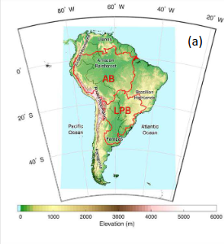
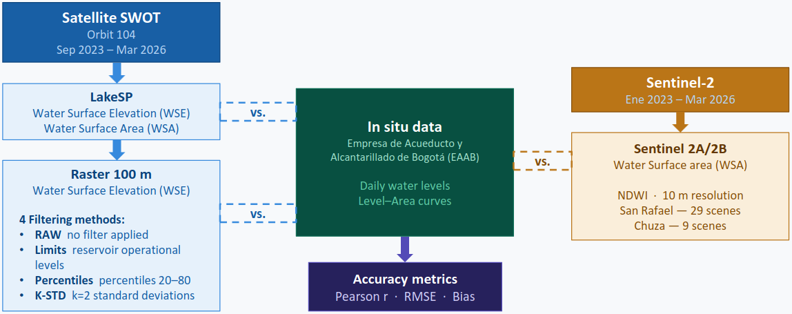
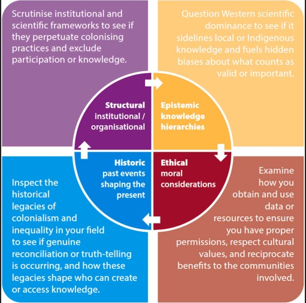

NEWS

newspaper
New article (Oct-2026)
newspaper
Workshop (Sep-2026)
Luis Morales-Marìn attends to the workshop for the NERC- FAPESP-NSTC Land Use Change Investigation And Regional Climate (LIRIC) project, which takes place in Bristol, UK.

newspaper
New presentation (Apr-2026)
Jorge Leal delivers an oral presentation at EGU2026 titled “Analysis and Validation of Water Surface Data in Two Reservoirs of Bogotá’s Water Supply System Using SWOT and Sentinel-2 Satellite Products.”

newspaper
New article (Apr-2026)